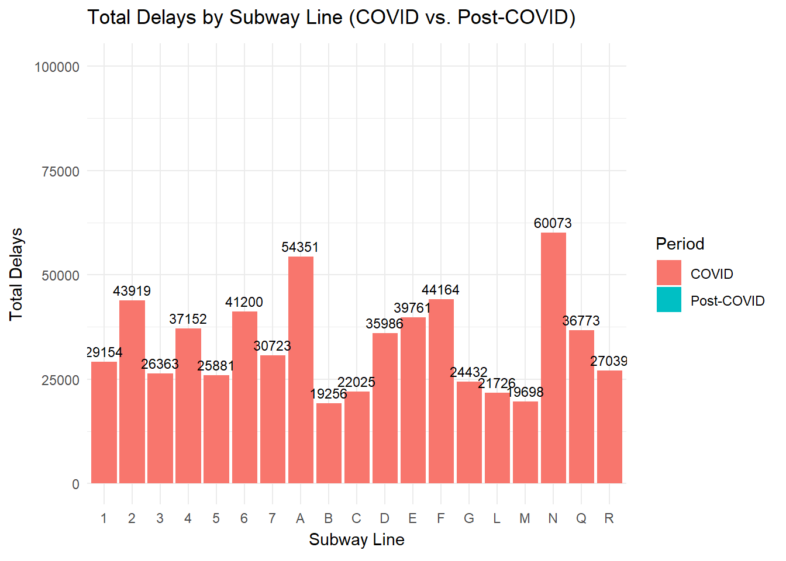
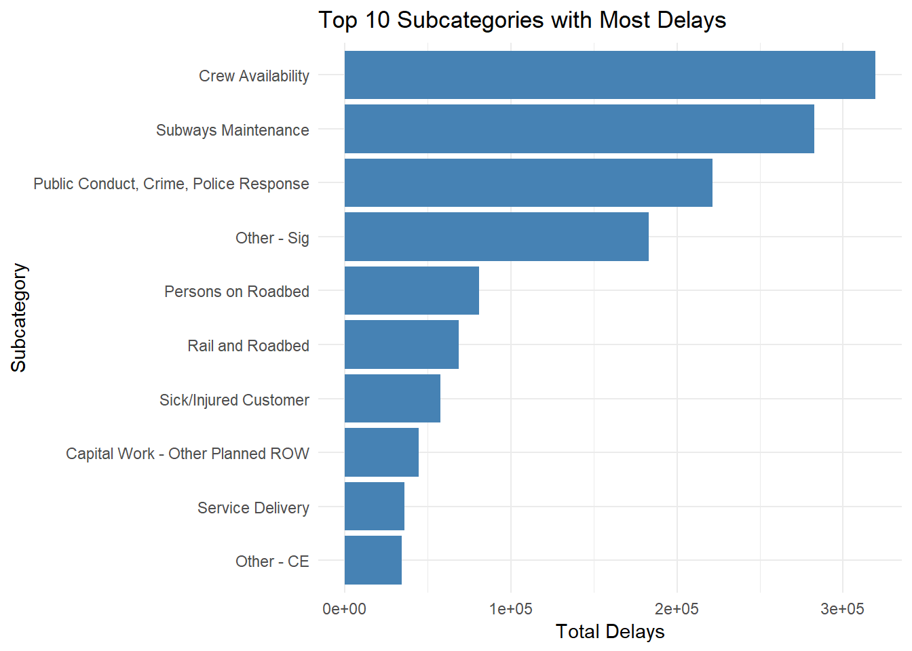

Analysis of MTA Subway Line Performance: Peak vs. Off-Peak Delays
Introduction
This report analyzes the performance of various subway lines in terms of delays over different time periods, specifically comparing the COVID period (2020-2021) to the Post-COVID period (2022-2024). The analysis focuses on both peak and off-peak periods, which are defined as weekdays (1) and weekends (2), respectively.
Data Overview
The dataset used in this analysis contains records of subway delays, broken down by line and day type (peak or off-peak), spanning from 2020 to 2024. The following steps outline how the data was processed and analyzed:
Data Preprocessing:
The dataset was filtered to remove the “Systemwide” data, which represents the overall system and is not specific to any subway line. The period column was created based on the day_type column (1 for peak, 2 for off-peak). The year column was extracted to distinguish between COVID and Post-COVID periods. Performance Analysis:
The total delays were calculated for each subway line during both peak and off-peak hours. The top 5 subway lines with the highest delays and the top 5 subway lines with the lowest delays were identified. Period Comparison:
The COVID period (2020-2021) and the Post-COVID period (2022-2024) were compared to assess how delays have changed over time.
library(dplyr)library(knitr)library(lubridate) # For date manipulation# Create the period column based on day_type and remove 'Systemwide' from lineMTA_train_delays <- MTA_train_delays %>%mutate(period =ifelse(day_type ==1, "Peak", "Off-Peak"),year =year(month)) %>%filter(line !="Systemwide") # Remove 'Systemwide' from line# Separate the data into COVID (2020-2021) and post-COVID (2022-2024)MTA_train_delays_covid <- MTA_train_delays %>%filter(year >=2020& year <=2021)MTA_train_delays_post_covid <- MTA_train_delays %>%filter(year >=2022& year <=2024)# Performance analysis for COVID periodperformance_covid <- MTA_train_delays_covid %>%group_by(line, period) %>%summarise(total_delays =sum(delays, na.rm =TRUE), .groups ='drop')# Performance analysis for post-COVID periodperformance_post_covid <- MTA_train_delays_post_covid %>%group_by(line, period) %>%summarise(total_delays =sum(delays, na.rm =TRUE), .groups ='drop')# Best and worst performers during COVID peaklowest_delay_covid <- performance_covid %>%filter(period =="Peak") %>%arrange(total_delays) %>%slice(1)highest_delay_covid <- performance_covid %>%filter(period =="Peak") %>%arrange(desc(total_delays)) %>%slice(1)# Best and worst performers during post-COVID peaklowest_delay_post_covid <- performance_post_covid %>%filter(period =="Peak") %>%arrange(total_delays) %>%slice(1)highest_delay_post_covid <- performance_post_covid %>%filter(period =="Peak") %>%arrange(desc(total_delays)) %>%slice(1)# Create tables for COVID periodbest_peak_table_covid <-kable(lowest_delay_covid, caption ="Best Performer During COVID Peak Period")worst_peak_table_covid <-kable(highest_delay_covid, caption ="Worst Performer During COVID Peak Period")# Create tables for post-COVID periodbest_peak_table_post_covid <-kable(lowest_delay_covid, caption ="Best Performer During Post-COVID Peak Period")worst_peak_table_post_covid <-kable(highest_delay_covid, caption ="Worst Performer During Post-COVID Peak Period")# Print the tablesprint(best_peak_table_covid)
Table: Best Performer During COVID Peak Period
|line |period | total_delays|
|:------|:------|------------:|
|S Fkln |Peak | 591|
Code
print(worst_peak_table_covid)
Table: Worst Performer During COVID Peak Period
|line |period | total_delays|
|:----|:------|------------:|
|N |Peak | 47600|
Code
print(best_peak_table_post_covid)
Table: Best Performer During Post-COVID Peak Period
|line |period | total_delays|
|:------|:------|------------:|
|S Fkln |Peak | 591|
Code
print(worst_peak_table_post_covid)
Table: Worst Performer During Post-COVID Peak Period
|line |period | total_delays|
|:----|:------|------------:|
|N |Peak | 47600|
Code
# Ensure month is in date formatMTA_train_delays$month <-as.Date(MTA_train_delays$month)# Extract year and summarize total delays by year and line, excluding 'Systemwide'delay_summary <- MTA_train_delays %>%mutate(year =year(month)) %>%# Extract the yearfilter(line !="Systemwide") %>%# Exclude subway systemwidegroup_by(year, line) %>%summarise(total_delays =sum(delays, na.rm =TRUE), .groups ='drop')# Create a combined dataset for COVID and Post-COVID periodscombined_summary <- delay_summary %>%mutate(period =ifelse(year >=2020& year <=2021, "COVID", "Post-COVID")) %>%group_by(period, line) %>%summarise(total_delays =sum(total_delays), .groups ='drop')# Create the animated bar chartanimated_plot <-ggplot(combined_summary, aes(x = line, y = total_delays, fill = period)) +geom_bar(stat ="identity", position ="dodge") +labs(title ="Total Delays by Subway Line (COVID vs. Post-COVID)",x ="Subway Line",y ="Total Delays",fill ="Period") +theme_minimal() +transition_states(period, transition_length =2, state_length =1, wrap =TRUE) +# Transition by periodenter_fade() +# Fade in when the bar appearsexit_fade() # Fade out when it disappears# Save the animation as a GIFoutput_gif_path <-"animated_bar_chart.gif"anim_save(output_gif_path, animated_plot, renderer =gifski_renderer())

MTA Train Delays Animation
Key Insights:
The N, F, 6, and A lines experienced the greatest increase in delays, with their delays nearly doubling.
Code
library(dplyr)library(ggplot2)library(lubridate)library(tidyr) # For pivot_wider# Ensure month is in date formatMTA_train_delays$month <-as.Date(MTA_train_delays$month)# Extract year and summarize total delays by year and line, excluding 'Systemwide'delay_summary <- MTA_train_delays %>%mutate(year =year(month)) %>%# Extract the yearfilter(line !="Systemwide") %>%# Exclude subway systemwidegroup_by(year, line) %>%summarise(total_delays =sum(delays, na.rm =TRUE), .groups ='drop')# Create a summary for COVID and post-COVID periodschange_summary <- delay_summary %>%mutate(period =ifelse(year >=2020& year <=2021, "COVID", "Post-COVID")) %>%group_by(line, period) %>%summarise(total_delays =sum(total_delays), .groups ='drop') %>%pivot_wider(names_from = period, values_from = total_delays, values_fill =0) %>%mutate(percent_change = (`Post-COVID`-`COVID`) /`COVID`*100) %>%select(line, percent_change)# Create a line graphggplot(change_summary, aes(x = line, y = percent_change, group =1)) +geom_line() +geom_point() +labs(title ="Percent Change in Delays: COVID vs. Post-COVID",x ="Subway Line",y ="Percent Change in Delays (%)") +theme_minimal() +scale_y_continuous(labels = scales::percent_format(scale =1)) # Format y-axis as percentage
Code
library(dplyr)library(ggplot2)library(lubridate)# Ensure month is in date formatMTA_train_delays$month <-as.Date(MTA_train_delays$month)# Calculate total delays for each subway line per yearfrequency_summary_per_year <- MTA_train_delays %>%mutate(year =year(month)) %>%# Extract the yeargroup_by(year, line) %>%summarise(total_delays =sum(delays, na.rm =TRUE), .groups ='drop')# Get top 10 lines with highest delays for each yeartop_delays_per_year <- frequency_summary_per_year %>%group_by(year) %>%slice_max(total_delays, n =10) %>%ungroup() # Ungroup for easier printing/viewing# Create a line graph for the top subway lines with delays over the yearsggplot(top_delays_per_year, aes(x = year, y = total_delays, color = line, group = line)) +geom_line(size =1) +# Line for each subway linegeom_point(size =2) +# Points for each data pointlabs(title ="Total Delays for Top Subway Lines Over the Years",x ="Year",y ="Total Delays") +theme_minimal() +scale_x_continuous(breaks =unique(top_delays_per_year$year)) +# Customize x-axistheme(axis.text.x =element_text(angle =45, hjust =1)) # Adjust x-axis text

Code
# Calculate total delays for each reporting categoryreporting_summary <- MTA_train_delays %>%group_by(reporting_category) %>%summarise(total_delays =sum(delays, na.rm =TRUE), .groups ='drop')# Create a bar plot of total delays by reporting category with numbers inside the binsggplot(reporting_summary, aes(x =reorder(reporting_category, total_delays), y = total_delays)) +geom_bar(stat ="identity", fill ="#FF7F50", alpha =0.5) +# Make bars semi-transparentgeom_text(aes(label = total_delays), color ="black", size =4, vjust =0.5) +# Place numbers inside barslabs(title ="Total Delays by Reporting Category",x ="Reporting Category",y ="Total Delays") +theme_minimal() +coord_flip() +# Flip coordinates for better readabilitytheme(plot.margin =margin(1, 1, 1, 3)) # Increase left margin for space
Code
# Remove NA values from subcategory and calculate total delays for each subcategorysubcategory_summary <- MTA_train_delays %>%filter(!is.na(subcategory)) %>%# Remove NA values in the subcategory columngroup_by(subcategory) %>%summarise(total_delays =sum(delays, na.rm =TRUE), .groups ='drop')# Get the top 10 subcategories with the most delaystop_10_subcategories <- subcategory_summary %>%arrange(desc(total_delays)) %>%slice_head(n =10)# Create a bar plot of total delays for the top 10 subcategoriesggplot(top_10_subcategories, aes(x =reorder(subcategory, total_delays), y = total_delays)) +geom_bar(stat ="identity", fill ="steelblue") +labs(title ="Top 10 Subcategories with Most Delays",x ="Subcategory",y ="Total Delays") +theme_minimal() +coord_flip() # Flip coordinates for better readability
Code
# Classify into Peak and Off-PeakMTA_train_delays <- MTA_train_delays %>%mutate(time_period =ifelse(day_type ==1, "Peak", "Off-Peak"))# Summarize total delays by month and time periodtotal_delays_summary <- MTA_train_delays %>%mutate(month =floor_date(month, "month")) %>%# Ensure month is in proper formatgroup_by(month, time_period) %>%summarise(total_delays =sum(delays, na.rm =TRUE), .groups ='drop')# Create a line plot of total delays by time period and animate by monthanimated_plot <-ggplot(total_delays_summary, aes(x = month, y = total_delays, color = time_period, group = time_period)) +geom_line() +geom_point() +labs(title ="Trend of Total Delays per Peak & Off-Peak Times",x ="Year",y ="Total Delays",color ="Time Period") +theme_minimal() +transition_reveal(month) +# Reveal the lines progressively across the monthsenter_fade() +# Fade in at the startexit_fade() # Fade out at the end# Set the output GIF pathoutput_gif_path <-"total_delays_animation.gif"# Save the animation as a GIF with gifski_rendereranim_save(output_gif_path, animated_plot, renderer =gifski_renderer())
MTA Train Delays Line Graph
Key findings: - Delays dropped in the first quarter of 2020 due to the NYC shutdown. - Delays surged to their highest point in mid-2021 as NYC began to reopen
Code
# Exclude specific lines (S Fkln, S 42nd, S Rock) from the datasetMTA_train_delays <- MTA_train_delays %>%filter(!line %in%c("S Fkln", "S 42nd", "S Rock")) %>%mutate(period =ifelse(day_type ==1, "Peak", "Off-Peak"),year =year(month)) %>%filter(line !="Systemwide") # Remove 'Systemwide' from line# Performance analysis during peak periodperformance_peak <- MTA_train_delays %>%filter(period =="Peak") %>%group_by(line) %>%summarise(total_delays =sum(delays, na.rm =TRUE), .groups ='drop') %>%arrange(desc(total_delays)) %>%slice_head(n =5) # Top 5 lines with the highest delays# Display the top 5 subway lines with the highest delays during peak timelibrary(knitr)kable(performance_peak, caption ="Top 5 Subway Lines with Highest Delays During Peak Time",col.names =c("Subway Line", "Total Delays"))
Top 5 Subway Lines with Highest Delays During Peak Time
Subway Line
Total Delays
N
124700
F
115696
A
113275
6
113036
E
107263
Code
# Exclude specific lines (S Fkln, S 42nd, S Rock) from the datasetMTA_train_delays <- MTA_train_delays %>%filter(!line %in%c("S Fkln", "S 42nd", "S Rock")) %>%mutate(period =ifelse(day_type ==1, "Peak", "Off-Peak"),year =year(month)) %>%filter(line !="Systemwide") # Remove 'Systemwide' from line# Performance analysis during off-peak period (corrected variable name)performance_off_peak <- MTA_train_delays %>%filter(period =="Off-Peak") %>%group_by(line) %>%summarise(total_delays =sum(delays, na.rm =TRUE), .groups ='drop') %>%arrange(desc(total_delays)) %>%slice_head(n =5) # Top 5 lines with the highest delays during off-peak time# Display the top 5 subway lines with the highest delays during off-peak timelibrary(knitr)kable(performance_off_peak, caption ="Top 5 Subway Lines with Highest Delays During Off-Peak Time",col.names =c("Subway Line", "Total Delays"))
Top 5 Subway Lines with Highest Delays During Off-Peak Time
Subway Line
Total Delays
2
43004
A
41458
N
35807
4
30958
Q
28446
Code
# Exclude specific lines (S Fkln, S 42nd, S Rock) from the datasetMTA_train_delays <- MTA_train_delays %>%filter(!line %in%c("S Fkln", "S 42nd", "S Rock", "JZ")) %>%mutate(period =ifelse(day_type ==1, "Peak", "Off-Peak"),year =year(month)) %>%filter(line !="Systemwide") # Remove 'Systemwide' from line# Performance analysis during peak periodperformance_peak_lowest <- MTA_train_delays %>%filter(period =="Peak") %>%group_by(line) %>%summarise(total_delays =sum(delays, na.rm =TRUE), .groups ='drop') %>%arrange(total_delays) %>%slice_head(n =5) # Top 5 lines with the lowest delays# Display the top 5 subway lines with the lowest delays during peak timelibrary(knitr)kable(performance_peak_lowest, caption ="Top 5 Subway Lines with Lowest Delays During Peak Time",col.names =c("Subway Line", "Total Delays"))
Top 5 Subway Lines with Lowest Delays During Peak Time
Subway Line
Total Delays
G
42623
3
45300
L
47567
M
47573
C
56065
Code
# Exclude specific lines (S Fkln, S 42nd, S Rock) from the datasetMTA_train_delays <- MTA_train_delays %>%filter(!line %in%c("S Fkln", "S 42nd", "S Rock", "JZ")) %>%mutate(period =ifelse(day_type ==1, "Peak", "Off-Peak"),year =year(month)) %>%filter(line !="Systemwide") # Remove 'Systemwide' from line# Performance analysis during off-peak period (lowest delays)performance_off_peak_lowest <- MTA_train_delays %>%filter(period =="Off-Peak") %>%group_by(line) %>%summarise(total_delays =sum(delays, na.rm =TRUE), .groups ='drop') %>%arrange(total_delays) %>%slice_head(n =5) # Top 5 lines with the lowest delays during off-peak time# Display the top 5 subway lines with the lowest delays during off-peak timelibrary(knitr)kable(performance_off_peak_lowest, caption ="Top 5 Subway Lines with Lowest Delays During Off-Peak Time",col.names =c("Subway Line", "Total Delays"))
Top 5 Subway Lines with Lowest Delays During Off-Peak Time
Subway Line
Total Delays
M
6132
G
11563
5
12681
L
14007
1
16880
Code
# Ensure all dataframes have the same number of rows (top 5)max_rows <-max(nrow(performance_peak), nrow(performance_off_peak),nrow(performance_peak_lowest), nrow(performance_off_peak_lowest))# Pad with NAs if needed, ensure that the new tibble has the correct column typesperformance_peak <- performance_peak %>%bind_rows(tibble(line =rep(NA_character_, max_rows -nrow(performance_peak)),total_delays =rep(NA, max_rows -nrow(performance_peak))))performance_off_peak <- performance_off_peak %>%bind_rows(tibble(line =rep(NA_character_, max_rows -nrow(performance_off_peak)),total_delays =rep(NA, max_rows -nrow(performance_off_peak))))performance_peak_lowest <- performance_peak_lowest %>%bind_rows(tibble(line =rep(NA_character_, max_rows -nrow(performance_peak_lowest)),total_delays =rep(NA, max_rows -nrow(performance_peak_lowest))))performance_off_peak_lowest <- performance_off_peak_lowest %>%bind_rows(tibble(line =rep(NA_character_, max_rows -nrow(performance_off_peak_lowest)),total_delays =rep(NA, max_rows -nrow(performance_off_peak_lowest))))# Now combine all four datasets into one large tablecombined_performance <-bind_cols( performance_peak %>%rename(Peak_Line = line, Peak_Highest_Delays = total_delays), performance_off_peak %>%rename(Off_Peak_Line = line, Off_Peak_Highest_Delays = total_delays), performance_peak_lowest %>%rename(Peak_Lowest_Line = line, Peak_Lowest_Delays = total_delays), performance_off_peak_lowest %>%rename(Off_Peak_Lowest_Line = line, Off_Peak_Lowest_Delays = total_delays))# Display the combined table with peak and off-peak delay datalibrary(knitr)kable(combined_performance, caption ="Top 5 Subway Lines with Highest and Lowest Delays During Peak and Off-Peak Times",col.names =c("Peak Line", "Peak Highest Delays", "Off-Peak Line", "Off-Peak Highest Delays","Peak Lowest Line", "Peak Lowest Delays", "Off-Peak Lowest Line", "Off-Peak Lowest Delays"))
Top 5 Subway Lines with Highest and Lowest Delays During Peak and Off-Peak Times
Peak Line
Peak Highest Delays
Off-Peak Line
Off-Peak Highest Delays
Peak Lowest Line
Peak Lowest Delays
Off-Peak Lowest Line
Off-Peak Lowest Delays
N
124700
2
43004
G
42623
M
6132
F
115696
A
41458
3
45300
G
11563
A
113275
N
35807
L
47567
5
12681
6
113036
4
30958
M
47573
L
14007
E
107263
Q
28446
C
56065
1
16880
Key Insights:
Peak Time:
The N line experiences the highest number of delay cases (over 100,000).
The G line has the fewest delays (less than half of N train).
Off-Peak Time: - The 2 train has the most significant delays. - The M train has the least delays.